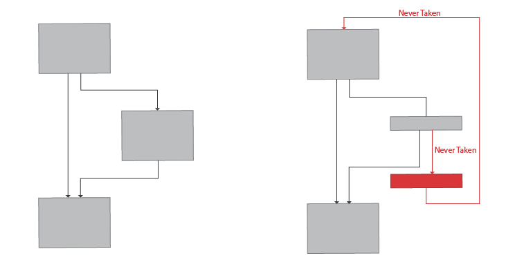
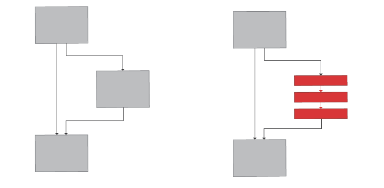
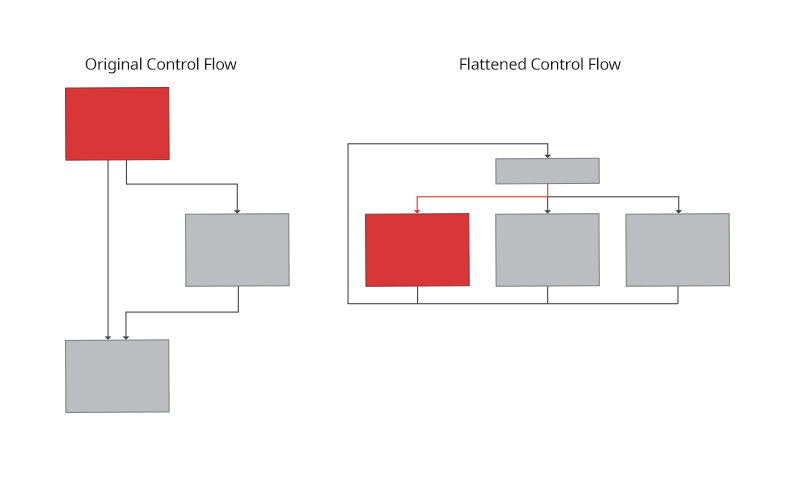

3 minutes
Binary Obfuscation
The main aim of Binary Obfuscation is to hinder the process of static analysis of a binary.
Renaming the symbols(variables and functions) of a binary implies that the clues as to what data a variable holds or what task a function performs that could be obtained from their names, are lost. This makes it a little harder for the analysts to keep a track of all the symbols without documenting them.
Moreover, some obfuscation techniques specifically target automated tools, rendering their outputs practically unusable. For example, careful modification of some binary instructions can cause automated disassemblers to fail, while it executes just the same as the original instructions.
Junk Code Insertion
The actual instruction is hidden among a bunch of other instructions. While the actual instruction to be executed might be trivial, these “other” instructions seem to be performing something pretty complicated, yet essentially do zero work.
Such instructions when closely analysed, can easily be segregated into typically useless, and can be changed to nop so it’s easier to look at the bigger picture, or simpler to look at when revisiting this part of the binary.
Junk Code Insertion technique.
Metamorphic Code
The actual instruction is expanded into a series of instruction that essentially give the same result. The effectiveness depends on the creativity of how complex can a simple instruction be made to look.
Metamorphic Code technique.
Data Encoding
Static data values are forced to be computed at run time instead of hard coding them. A value to be operated upon can be calculated through a number of arithmetic operations instead of straightaway including it in the code itself. This value is ephemeral, that is, it remains in the memory as long as it’s needed and disappears right after. This entails extra work to be done at the time of analysis to decipher the values being operated upon, while it renders tools like strings useless.
Data Encoding technique.
Opaque Predicates
Extra computational checks are added in place of trivial branching instructions that will always yield the same output. The flow of code execution, therefore, now include checks that aren’t needed since the flow is set in code and is always going to be the same. This simply makes the code a lot more complicated than it actually is. The involvement of such computational instructions as well as presence of extra branches(that will never be taken) can hinder the analyst and confuse decompilers.
 Opaque Predicates technique.
Splitting
Blocks of codes are split into smaller blocks, with the addition of unnecessary jumps and calls, so as to make it difficult for the analyst to keep track of flow of code execution.
 Splitting technique.
Control Flow Flattening
A simple flow of code execution is transformed into a state machine. A state of decision making(dispatch table) is introduced which keeps track of the current state of execution, updates the current state at every pass and transfers the execution to different branches based on the current state.
 Control Flow Flattening technique.
Polymorphic Code
Code that has the ability to modify itself at every run(or even during the same run) and take different paths depending on it’s current state, while achieving the same task every time. Even though this technique is tough to analyse, it requires parts of memory to be made writable and executable so as to be able to write it’s own modified version in memory to be executed. This factor not only makes it detectable, but can even introduce vulnerabilities if not done
Citation: Practical Binary Analysis.